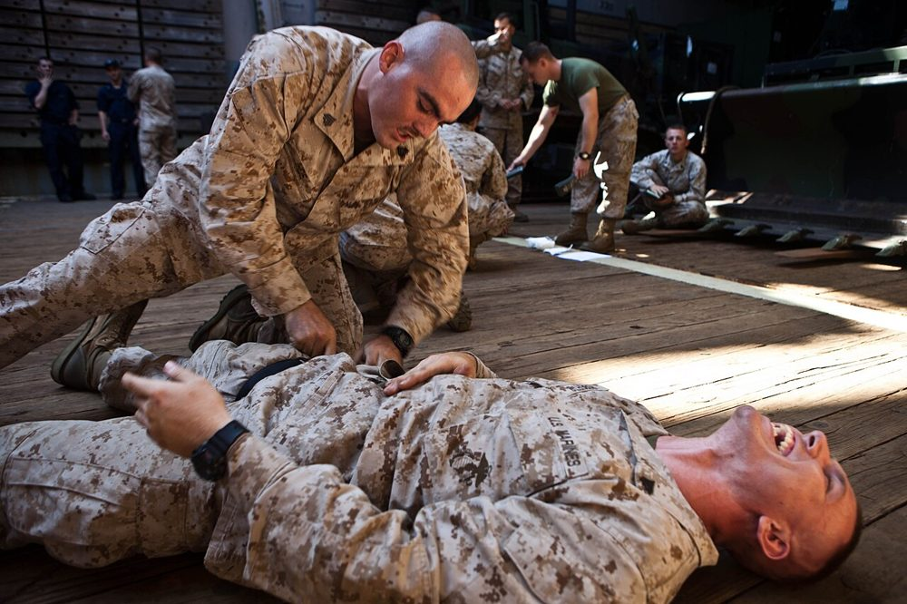

מבוא לטראומה
מערכת טראומה, הסקר הראשוני xABCDE, הלם דימומי והחייאה בשליטה על נזק
בסוף המפגש תדעו
- להסביר מהי מערכת טראומה ולמה טיפול במרכז טראומה מציל חיים
- לבצע את הסקר הראשוני xABCDE בסדר הנכון ולטפל בכל בעיה מסכנת חיים ברגע שמזהים אותה
- לזהות הלם בחולה טראומה ולחפש את מקור הדימום לפי "ארבעה ועוד הרצפה"
- להכיר את עקרונות ההחייאה בשליטה על נזק: מוצרי דם מאוזנים, מעט קריסטלואידים, לחץ דם "מספיק" ו-TXA
- לבצע סקר שניוני מסודר ולהבין למה חוזרים לבדוק את המטופל למחרת
טראומה במספרים
- מרכז טראומה מול בית חולים רגיל (מחקר NSCOT, יותר מ-5,000 מטופלים): תמותה בבית החולים נמוכה ב-20% ותמותה בשנה נמוכה ב-25%
- הקמת מערכת טראומה (Nathens, כ-400,000 מטופלים ב-17 שנה): ירידה של 8% בתמותה
- 40% מההרוגים בתאונות דרכים עוד היו בחיים כשהגיע הצוות הראשון
- רוב הפצועים צעירים ולכן המחיר לחברה עצום
המטופל הנכון, למקום הנכון, בזמן הנכון
- מערכת "כוללת": כל בתי החולים שותפים, כל אחד לפי רמתו (1–4), עם כללי מיון בשטח והסכמי העברה
- מערכת "בלעדית" שלחה כמעט את כולם למרכז אחד: טוב לפצועים קשה, אבל הרבה העברות מיותרות של פצועים קל
- רצף אחד: מניעה, טיפול בשטח, בית חולים, שיקום, רישום ושיפור איכות
- בשטח: בטיחות הזירה, הערכה מהירה, החלטה לאן מפנים, טיפול תוך כדי נסיעה ("לטעון ולנסוע"). שואפים לפחות מ-15 דקות בזירה
הסקר הראשוני: xABCDE
2. לא מחכים לאבחנה מדויקת כדי לטפל
3. לא צריך אנמנזה מפורטת כדי להתחיל
צוות טראומה הוא צוות שנבנה לרגע
- תדריך לפני ההגעה: מי ראש הצוות, מי בנתיב האוויר, מי בגישה לווריד, איזה ציוד ודם צריך
- ראש הצוות עומד למרגלות המיטה ורואה את התמונה הכוללת. מי שמטפל בנתיב האוויר עומד בראש המיטה
- ה-3C בתקשורת: פונים בשם או בתפקיד, נותנים הוראה ברורה וסוגרים מעגל ("נתתי, ראש צוות")
- פסק זמן קצר בסוף הסקר הראשוני ולפני מעבר ל-CT או לחדר ניתוח. בסוף: תחקיר בלי האשמות
- טיפול רגיש לטראומה: מדברים עם המטופל, מסבירים, שומרים על צניעות ונותנים משכך כאבים. גם מטופל שנראה מחוסר הכרה עשוי לזכור
עוצרים את הדימום לפני הכול
- חושפים את כל האזור ומפעילים לחץ ישיר ומילוי הפצע בגזה (packing)
- חוסם עורקים: כשהלחץ לא עוצר את הדימום, בדימום עורקי פועם, או בקטיעה מלאה או כמעט מלאה
- שמים 5–8 ס״מ מעל מקום הדימום, על העור, לא על בגד ולא על מפרק. מהדקים עד שאין דופק מתחת לחוסם
- עדיין מדמם? חוסם שני 5–8 ס״מ מעל הראשון. רושמים את השעה על החוסם
- עד שעתיים: בלי עלייה בקטיעות ובסיבוכים. אחרי הייצוב שוקלים להחליף אותו בחבישת לחץ
- דימום בחזה, בבטן, באגן ובאזורים "צומתיים" (מפשעה, בית שחי) לא נעצר בלחץ חיצוני: צריך ניתוח או צנתור

"מה שמך?"
- תשובה ברורה אומרת שכרגע נתיב האוויר תקין. דיבור משובש = ירידה בהכרה או חסימה
- סימני אזהרה: אי-שקט, נשימה רועשת, שאיפת עשן, פגיעה בפנים, דם בלוע, ירידה בסטורציה
- עמוד שדרה צווארי: בכל מנגנון מתאים מניחים שיש פגיעה לא יציבה. צווארון קשיח או ייצוב ידני
- פצוע ער עם פגיעה בפנים שנושם טוב בישיבה: משאירים אותו כך וקוראים למומחה. נתיב סביר עדיף על אין נתיב
- מטופל בהלם: צנרור לפני שנותנים דם עלול לגרום לקריסה. בסקירה של 4 מחקרים התמותה הייתה 50% כשהדם ניתן קודם, לעומת 78%
- הצנרור: וידאו-לרינגוסקופ (הצלחה בניסיון הראשון 85% לעומת 71%). מאשרים מיקום עם ETCO2

חזה אוויר בלחץ: אבחנה קלינית
הסימנים
- כניסת אוויר חלשה או חסרה בצד הפגוע
- לחץ דם נמוך (פחות דם חוזר ללב)
- ורידי צוואר בולטים (קשה לראות), אמפיזמה תת-עורית
- סטיית קנה לצד הנגדי (עדינה, ממששים בגומה שמעל עצם החזה)
- במונשם: לחצי הנשמה עולים

חזה אוויר בלחץ משמאל, לפני ואחרי

👆 לחצו על אזור בצילום כדי לקרוא עליו
חלל החזה השמאלי שחור ושקוף יותר, בלי כלי דם ריאתיים עד הדופן. זה האוויר שנכלא בחלל הצדר ולא יכול לצאת
הריאה השמאלית נדחסה אל השער. ככל שהאוויר מצטבר, הלחץ בחזה עולה
הלחץ דוחף את הלב והקנה לצד הנגדי והוורידים הגדולים מתקפלים. פחות דם חוזר ללב ולכן לחץ הדם יורד. זה ה"לחץ" בחזה אוויר בלחץ
הריאה התפשטה והמדיאסטינום חזר למרכז. בטראומה הצילום הזה מגיע רק אחרי הטיפול: את האבחנה עושים ליד המיטה
הלם הוא תת-זילוח, לא רק לחץ דם נמוך
סימני הלם
- אי-שקט או בלבול, דופק מהיר, נשימה מהירה, הזעה
- גפיים קרות ומנומרות, דופק פריפרי חלש, לחץ דופק צר
- מיעוט שתן ורק בסוף: לחץ דם נמוך. צעיר בכושר מפצה זמן רב
לא כל הלם הוא דימום
- דימום הוא הסיבה השכיחה ביותר ושוללים אותו ראשון
- חזה אוויר בלחץ · טמפונדה (ורידי צוואר בולטים, פצע חודר בחזה, eFAST)
- הלם נוירוגני: לחץ דם נמוך עם דופק איטי ושיתוק גפיים
- חבלת לב (הפרעות קצב), אלח דם מאוחר, או אירוע רפואי שגרם לתאונה
"ארבעה ועוד הרצפה"
דם, לא מים
- ההגדרה: שליטה מהירה בדימום, עירוי מאוזן של מוצרי דם (או דם מלא), מינימום קריסטלואידים, לחץ סיסטולי "מספיק" של כ-90 עד שהדימום נשלט ותיקון הפרעות הקרישה והחומצה
- למה לא קריסטלואידים: מחמירים חמצת והפרעת קרישה, קשורים ל-ARDS ומאיצים את "שלישיית המוות": היפותרמיה, חמצת וקואגולופתיה
- יחס פלזמה:טסיות:כדוריות של 1:1:1 או 1:1:2, דרך פרוטוקול עירוי מסיבי (MTP) ומחמם נוזלים
- הפרעת קרישה של טראומה מופיעה בכ-25% מהפצועים. TEG או ROTEM מכוונים את העירוי לפי מה שחסר
מוח, חוט שדרה וחום גוף
D · מצב נוירולוגי
- "מה שמך?" ו"תזיז ידיים ורגליים" בודקים מוח וחוט שדרה בשתי שאלות
- מדד GCS (3–15): פקיחת עיניים, תגובה מילולית ותגובה מוטורית. המוטורית מנבאת הכי טוב
- מתעדים GCS ואישונים לפני תרופות הרדמה
- מדד GCS של 8 ומטה: מניחים פגיעת ראש קשה
- הלם נוירוגני: לחץ דם נמוך, דופק איטי ושיתוק. ב-20–29% מפגיעות צוואר, נדיר מתחת ל-T6. אבל קודם שוללים דימום
- מטרת הטיפול בפגיעת ראש: למנוע נזק משני. בלי היפוקסיה ובלי לחץ דם נמוך
E · חשיפה וסביבה
- מפשיטים לגמרי כדי לא לפספס פצע ושומרים על כבוד המטופל
- היפותרמיה מחמירה הלם ודימום: שמיכות חמות, חימום אוויר, חדר חם ונוזלים מחוממים
- מודדים חום ליבה
פתיחת חזה בחדר הטראומה
- ארבע מטרות: לשחרר טמפונדה, לתקן זמנית פצע בלב, להדק את אבי העורקים היורד ולעצור דימום בחזה
- סימני חיים: אישונים מגיבים, נשימה, דופק בקרוטיס, לחץ דם, תנועה או פעילות חשמלית בלב
- מעל גיל 57 התמותה הייתה 100% בחבלה קהה ובחודרת
- לפי EAST: לא בחבלה קהה בלי סימני חיים. כן בפצע חודר, עם או בלי סימני חיים
- לפי WTA: לפי זמן החייאה לפני ההגעה. פחות מ-15 דקות בפצע חודר בגו, פחות מ-10 בחבלה קהה
- בלון באבי העורקים (REBOA): אין עדיין הוכחה לתועלת. ניסוי אקראי ראשון נעצר מוקדם בגלל תוצאות גרועות יותר
מהראש עד כפות הרגליים
- אנמנזה AMPLE: רגישויות, תרופות (במיוחד נוגדי קרישה), מחלות והריון, ארוחה אחרונה, אירוע ומנגנון
- בדיקה שיטתית: קרקפת, עיניים, פנים, צוואר, חזה, בטן (סימן חגורת בטיחות), אגן, פרינאום (דם בפתח השופכה), גפיים ודפקים ובסוף נוירולוגיה
- הגב: גלגול גוש (log roll) עם ארבעה אנשים: אחד מחזיק ראש וצוואר ומוביל, שניים מגלגלים, אחד בודק. בדיקה רקטלית לפי הצורך
- פצע חודר: סופרים את כל הפצעים, גם בבית השחי, בקפלי העור, בפרינאום ובקרקפת. מסמנים בסמן נראה בצילום
- מעבדה והדמיה: סוג והצלבה, המוגלובין, לקטט, גזים, קרישה, שתן, FAST חוזר, CT לפי הצורך

מחקרים שכדאי להכיר
1,310 פצועים קשה ב-15 שירותי אמבולנס (אוסטרליה, ניו זילנד, גרמניה). הישרדות עם תפקוד טוב אחרי חצי שנה לא השתנתה (53.7% מול 53.5%). תמותה ב-28 יום: 17.3% מול 21.8%. בלי עלייה בקרישים
PATCH-Trauma Investigators (Gruen RL et al.). N Engl J Med 2023;389:127-361,604 פצועים מדממים שקיבלו עירוי מסיבי. מנה גבוהה של קריופרציפיטט מוקדם בנוסף לטיפול הרגיל לא הורידה תמותה ב-28 יום (25.3% מול 26.1%)
Davenport R et al. JAMA 2023;330:1882-91432 פצועים בהלם בבריטניה: 2 מנות דם ו-2 פלזמה לעומת סליין לפני בית החולים. התוצא המשולב (מוות או כישלון בפינוי לקטט) כמעט זהה: 64% מול 65%. המחקר נעצר מוקדם בגלל הקורונה
Crombie N et al. Lancet Haematol 2022;9:e250-61חמישה דברים לקחת למחלקה
- מרכז טראומה ומערכת טראומה מצילים חיים. זמן הוא דם
- בסקר xABCDE קודם עוצרים דימום חיצוני ומטפלים בכל בעיה מסכנת חיים ברגע שמוצאים אותה
- חזה אוויר בלחץ הוא אבחנה קלינית. מנקזים לפני צילום
- הלם בטראומה הוא דימום עד שיוכח אחרת: מחפשים בחזה, בבטן, באגן, בעצמות ארוכות ועל הרצפה
- דם ולא מים: עירוי מאוזן, לחץ דם "מספיק", TXA בתוך 3 שעות ושליטה מהירה בדימום